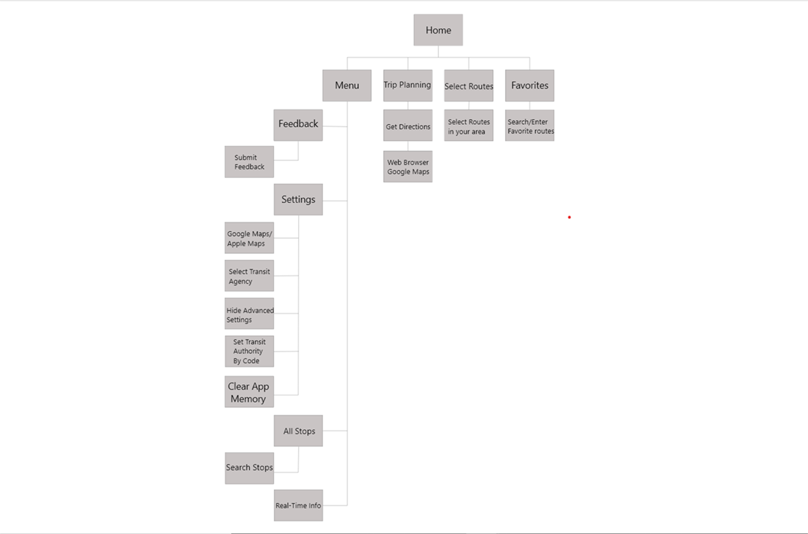
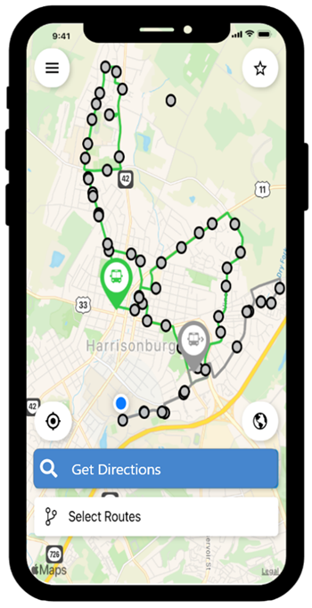
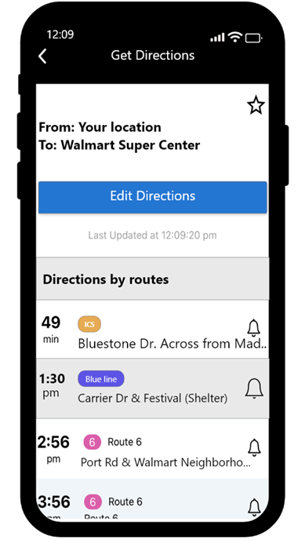

Created by: Daniel Doh
Last updated: September 4, 2021
Transportation is something everyone has access to nowadays. People have their own cars, people use Uber, Lyft, and many other applications today as their source of transporation. Those who don't have access to theses sources, would rely on taking the bus in their general area. Although there are many other ways of transportation, taking the bus will always be something that people will rely on, wherever they are.
MyStop is a popular application that everyone uses to know the schedule and routes of the HDPT buses in their area. It is a simple application that anyone can use. Although it is a straight forward app that tells the individual when and where the next bus stop will be, I believe that there are some issues with the flow of the application that hinders the users experience. Particularly, the search engine within the app. I believe that there could be some improvements made within the search engine feature within the app to help individuals with directions/locations.
The primary users of the MyStop app are anyone that don't have access to their own vehicle. It is used as a source of transportation to get to their desired location. It is very popular among college students. As students go to college, some of them are not able to bring their car to campus whether it be family reaons, space, or time.Thus, relying on the buses to transport them to their desired location.
The main goals for the users who are using the MyStop app are:
Although being a very simple task application of finding a bus route to go your destined location, there are some features of the app
that needs remodeling. The user interface of the app seems a bit dull, and it is sometimes not fitted well with newer generations of cellular
devices. It is needed of a visual rework. Not only that, they need to improve their search engine feature within the app. Some individuals
do not even know that there is a search engine within the app since it is labeled as "Trip Planning".
Below are images of the standard steps of
finding directions to a location using the search engine:
Based on the images shown above, the app doesn't focus on using the bus routes within the app. Instead, when searching directions from one location to another, you will be navigated to Google Maps within your web browser app. It defeats the purpose of finding bus routes within the MyStop app, and it focuses on different navigation systems with different applications. This makes it confusing for the user and makes it more difficult for them to find directions to a certain location.
As shown above, there are many complications within the MyStop. When searching for a specific location, they don't offer you any bus stops in your area, instead they would navigate you to Google Maps. This limits the users abilities to find directions to their location, and results in taking extra steps.
Design Question:"How might we improve the experience of finding directions using the search engine on the MyStop app?"
The participants that I have interviewed were twenty five James Madison University students who actively use the MyStop app. They were asked to fill out a Google Survey that I have created to gain some information of what features they mainly use within the MyStop app. Although I was not able to meet these students in person, their answers has given me strong insights about the MyStop app.
Based off of the students answers on the survey, over 50% find the app relatively simple to use. However, when asked about how often they use the search engine, almost half of the students show that they don't use it at all. This could indicate that they don't know that there is even a search engine, or they find it not helpful within the MyStop app. Lastly, when asked what feature they mainly use within the app, almost 70% of students use the 'selecting routes' feature, and only 8% of them use the search engine. These answers have shown me that there is need to fix the search engine within the MyStop app.
Pain Points:
With all of the knowledge gathered from the participants, and learning about the UI and UX features of th MyStop app, I have created a new design highlight for the search engine feature for the MyStop app.
Below is a wireframe I have created for the normal user flow of the MyStop app:
The next image below is a new edited wireframe I have created for the MyStop app. The only change that I have decided to make is relabeling the search engine, as well as, changing the user flow of the app.
As a result, I have created a new user flow mockup of the search engine feature of the MyStop app. I wanted to make sure the user flow of the search engine takes place within the MyStop app. I have relabeled the search engine name from 'Trip Planning' to 'Get Directions'. This will be much easier for the user to navigate within app to find directions to a specific location.
Based on my new mockup shown above, I have focused on the bus routes as if you were a JMU student. When searching for directions, you would simply type two locations to get from point A to point B. After entering your desired location, the app will generate the best method of bus routes within your area to give you directions of how to get to your desired location. It will give you a step by step process of which bus to take and what time they will be arriving at that stop. Instead of it originally transferring you to your web browser to Google Maps, this will take place within the app, making the process less complex. Although it is a simple change, it can improve the experience of the user much more than it was before.
Thank you for reading this case study on the redesigning of the MyStop app. With changes like these, whether they are big or small, they can enhance the users experience much more when exploring the app. I hope in the future, they will make these types of changes within the app to help those ranging from students to those who don't have a source of transportation.